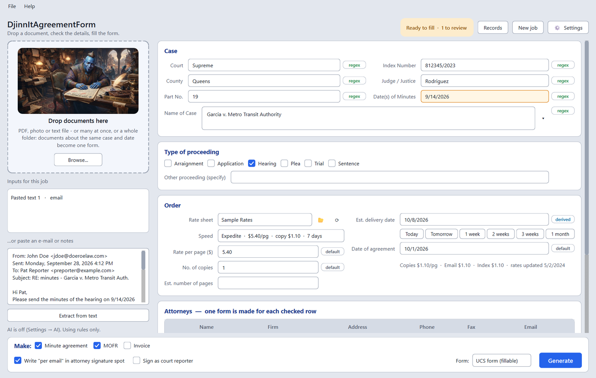
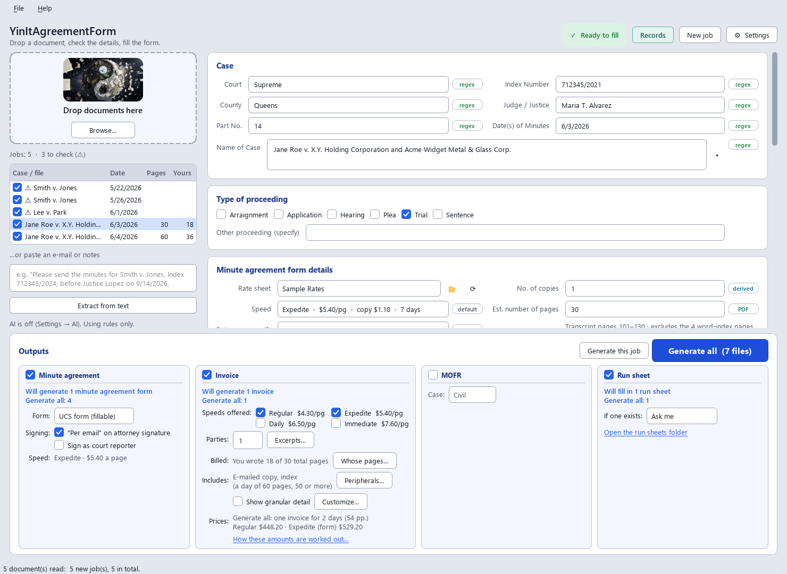
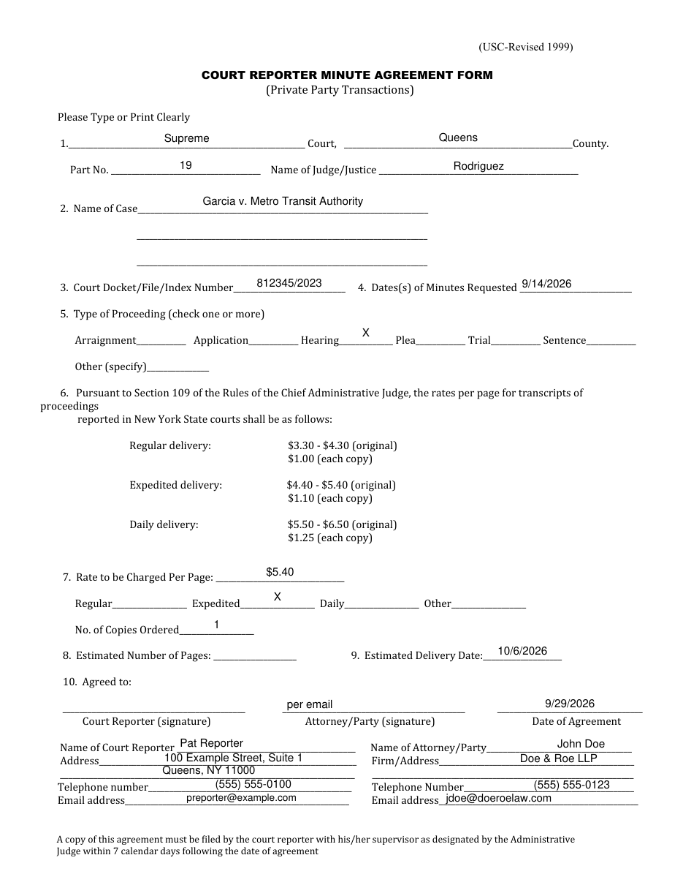
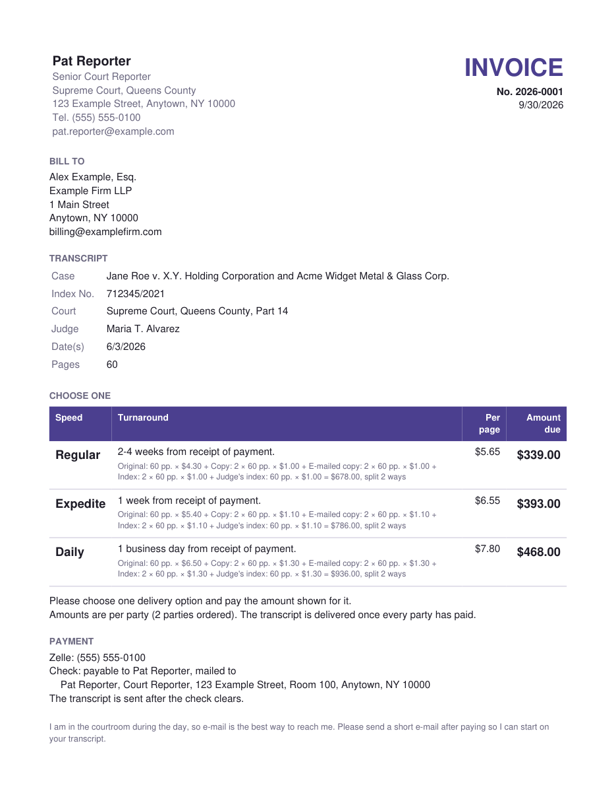
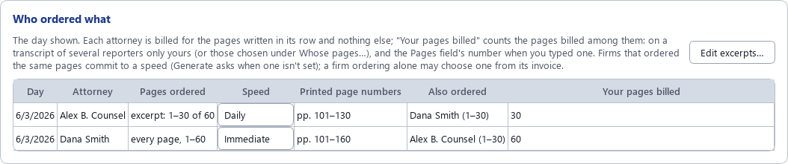
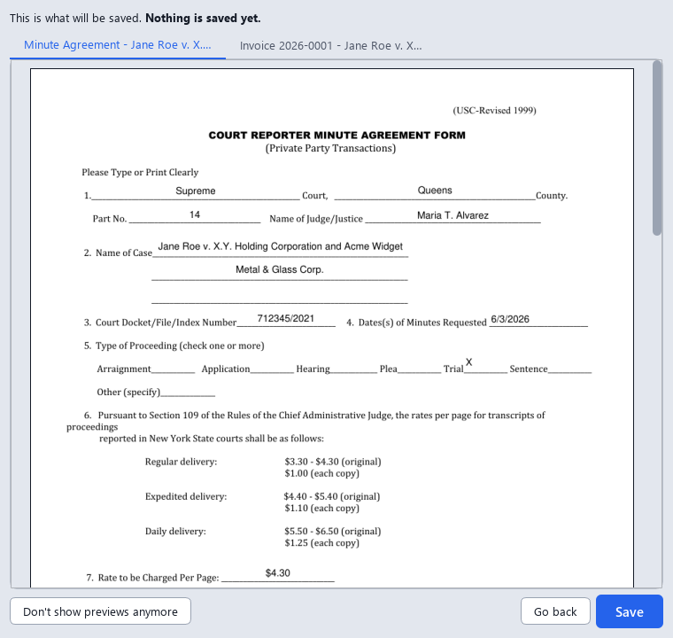
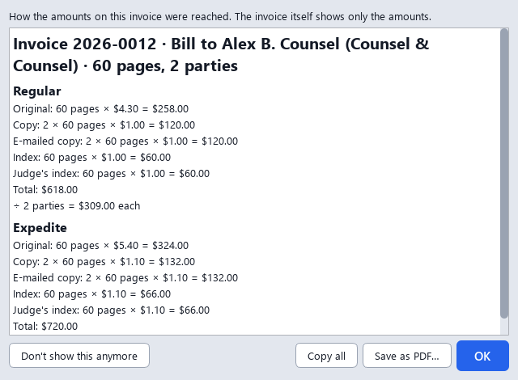
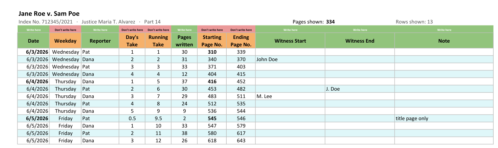
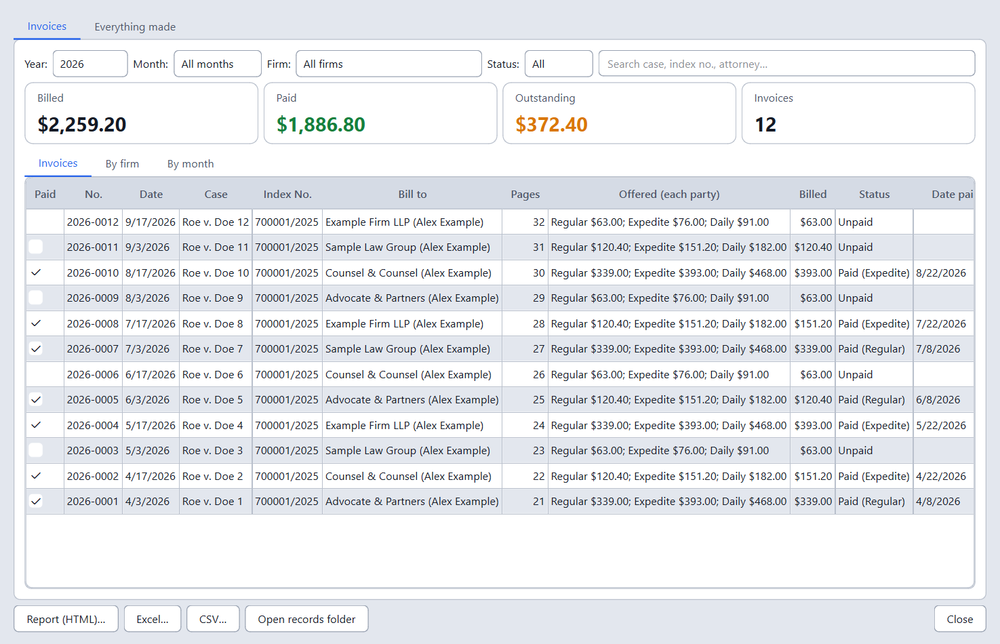

Fills in the UCS Court Reporter Minute Agreement Form and the MOFR for you, makes invoices from your transcripts, keeps a shared trial's run sheet, and keeps track of what you billed and what was paid. Drop in what the attorney sent, check the details, and get finished PDFs.
Download for Windows View on GitHubFree and open source (AGPL). Windows 10 or 11. No administrator rights needed.

Every private minute order starts with the same form: court, part, judge, case name, index number, dates, type of proceeding, rate, attorney and your own details. All of that is already sitting in the transcript, the invoice, the calendar photo or the e-mail. This app reads it and types it in, so you only check it.
Batch mode reads any number of documents and sorts them into one job per case and date. A transcript and its invoice make one form, not two. Two days of the same case make two forms (or one, if you prefer), but each attorney gets one invoice for all the days they ordered. Tick the jobs you want and press Generate all.


The court's own fillable form, filled in, with "per email" on the attorney line if you like, and your signature picture on the court reporter line. A clean re-typeset version and the original scan are available too. Sample shown uses made-up names.

Drop a transcript PDF and tick Invoice. The page count and your rate sheet price the original, each party's copy and e-mailed copy, and an index for long transcripts, split between the ordering parties. You tick the speeds to offer (Regular and Expedited to start with), and the invoice shows each one's turnaround and amount, with how to pay you. Want the page count, the pages of each day and the charges spelled out for this job? Tick Show granular detail, and choose what it shows. Extras… drops the e-mailed copy or adds an index for one job. The notes on the invoice are yours to write, too: place them where you like and have them show only when they apply ("delivered once every party has paid" only when several parties ordered).
One firm ordered the whole transcript and another just an excerpt? Excerpts… takes it in one line ("Dana Smith ordered pages 20 to 40"), or day by day for anything more involved. Each attorney gets one invoice for what they ordered: pages ordered together share the original and the index, and every attorney pays for their own copy.
Shared the trial with another reporter? The invoice bills only your pages, the ones with your initials at the foot: 65 of a 150-page transcript, say. Whose pages… bills someone else's pages or the whole transcript when you need to, and the app asks when it can't tell. Sample shown uses made-up names.
Before you generate, the Who ordered what card lists every day the invoice covers, with a row for each attorney: the pages it ordered (every page, or which excerpt), the page numbers printed on them, who else ordered the same pages, and how many of your pages that bills. An attorney not ticked on a day "orders nothing", and when an invoice won't be made yet (a day with nobody ticked, an excerpt to check, whose pages to bill) the card says so in amber. Double-click a row to change it. Generate all asks before it bills a case with a day not decided: go back and decide, or go on without it. Sample shown uses made-up names.


Click Generate and the app first shows you each form and invoice as it will be saved, a tab for each file, the invoice with the number it will get. Save saves them. Go back saves nothing and takes no invoice number, so you can fix a field and try again. Rather skip it? Don't show previews anymore turns it off, and Settings turns it back on. Once the files are saved, Print… sends them to your printer. Sample shown uses made-up names.
Your invoices can stay clean, with just the amounts, and the math is still at hand. After you make an invoice, a small window spells out each amount line by line: the pages times the rate, the copies, the index, the total, and how it splits between the parties. Glance at it and click OK, or Copy all to paste into a reply, or Save as PDF… for the attorney who asked. Don't need it? Don't show this anymore, and Settings brings it back. Prefer to have it on file? Settings → Invoice can also save a detailed copy of every invoice, the same invoice number with the full breakdown, ready for when someone asks. Sample shown uses made-up names.

When reporters take turns, each one puts their initials on the pages they write. Tick Run sheet and the app reads those initials page by page and adds a row per take to the trial's run sheet in Excel: date, reporter, pages written, start and end page, and the witness who took the stand. It finds the trial's run sheet by index number or case name (one trial can have several index numbers) and asks before adding to it. Filter by reporter to see their pages, or open the By Reporter sheet for everyone's totals. Sample shown uses made-up names.

Records keeps every invoice and form the app made. See totals billed, paid and outstanding for any month, year or firm, with breakdowns by firm and by month. Tick Paid when the money comes in, and if you corrected an amount in an invoice PDF, Change amounts… keeps the totals right. Choose the columns you want: your pages and the transcript's, the excerpt, the speeds offered and the one ordered, whether an e-mailed copy was included, and more, and click a heading to sort. Looking for one firm or case? Type it in the search box: a firm, a case, an index number, an invoice number, with Fuzzy to forgive a typo or Regex for exact patterns. Deleted something by mistake? It waits in the Trash for 30 days. Export a report, an Excel workbook or CSV files whenever you like; a CSV copy is always kept up to date in your Documents folder.
Need a corrected invoice, or another day of the same case? Right-click a record and open its job again: the case comes back as you left it. Ticked the wrong invoice paid? Undo (Ctrl+Z) takes it back. Summary… sums up a month or a year (invoices, pages, billed, paid, still owed), and the first time you open Records in a new month it tells you what last month came to. Your records are backed up each day you open the app, and you can go back to any of the last ten days.

Everything runs on your computer. Photos are read with Windows' built-in text recognition. Nothing is uploaded. Once a day the app asks GitHub whether there is a newer version (it sends nothing about you or your cases); you can turn that off in Settings.
Missing or conflicting items (index number, dates, judge) are raised before filling, never silently guessed.
Your name, address, phone, e-mail, default speed, copies and signature are set once in Settings, and what you tick in the Outputs box stays ticked.
The PDFs stay fillable: every value the app typed in, invoice amounts included, can be corrected in a PDF viewer. When it's final, File → Lock finished PDFs saves a locked copy.
Works with Windows' display scaling, and Ctrl + and Ctrl − (or Ctrl and the mouse wheel) make everything bigger or smaller.
Save everything next to your documents, in one folder, or give agreements, invoices, MOFRs and run sheets a folder each.
Rates live in small spreadsheets (CSV) you can edit in Excel: private, city, whatever you charge.
If you use Ollama, an AI helper can read messy photos and e-mails. It is only used when Ollama is installed, and it stays on your machine. Choose the smaller, faster model or the larger, more accurate one in Settings.
File → Export settings saves your details, options and rate sheets as one file; Import settings reads it on the other computer. Giving it to a colleague? Leave your personal details out with one click. A short welcome asks a new user the few things the forms need.
Press F1 (or Help → How to use) for what the app reads, what it makes, the steps, tips and the keyboard shortcuts.
Read the code, report a problem, or suggest a change on GitHub.
Windows 10 (version 1809, October 2018, or newer) or Windows 11, 64-bit. Not available for Mac or Linux.
Python and everything else the app needs are included. No administrator rights are required.
About 200 MB of disk space. No internet connection is needed to use it.
Reading photos uses Windows' own text recognition, which needs the English language pack. Most PCs already have it. Typed PDFs and e-mails don't need it.
The AI helper needs the free Ollama app and a small model, plus a reasonably modern PC. The app works fine without it.
DjinnItAgreementForm-Setup-x.y.z.exe.